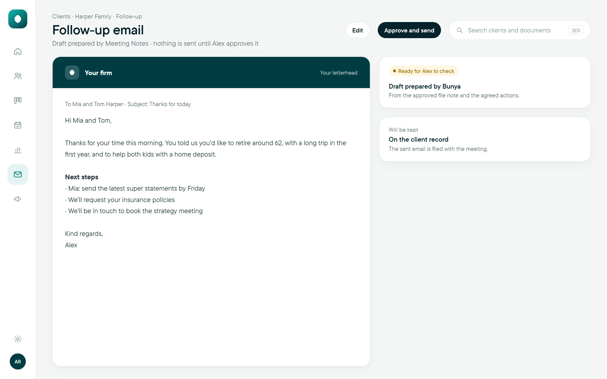
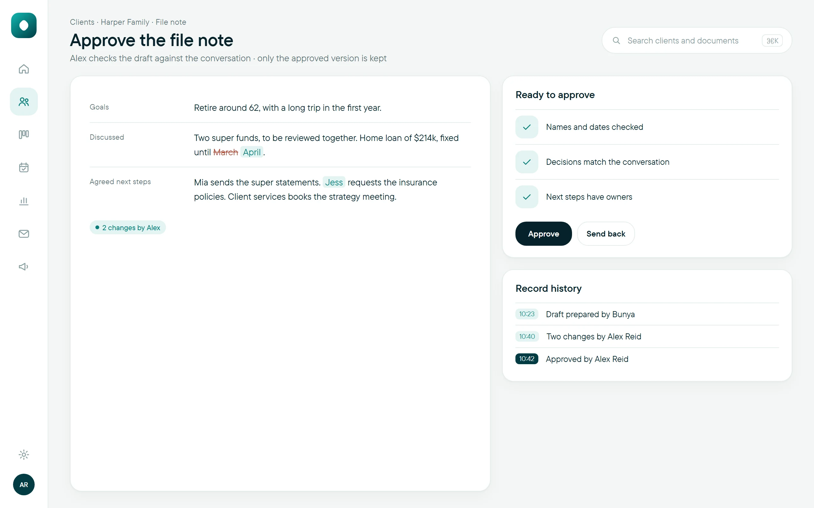

Meeting NotesEvery meeting, written up.
Bunya drafts the notes so your adviser can stay in the conversation.
Included with Command Centre, from $3 per household a monthWorks inside your Microsoft 365TeamsOutlookSharePoint
Captured with the client’s consent.
File note, actions and follow-up email drafted after the call.
Your adviser checks it before anything is filed or sent.
How it works
- 1Recorded
The Teams meeting is recorded and transcribed, under your agreed consent settings.
- 2Drafted
File note, actions and a follow-up email, in your firm’s format.
- 3Checked
The adviser edits, approves or sends it back.
- 4Filed
Recording, transcript and the approved note, with the client.
Works with Teams, Outlook, SharePoint and your client record.
Up close




Drafted from the conversation. Every point links to the moment it was said, so checking takes minutes.
Today, and with Meeting Notes
What’s included
Questions
Do clients know the meeting is recorded?
Yes. The adviser tells them at the start, and Teams shows a recording banner for the whole meeting.
Which meetings are supported?
Teams meetings and Teams calls. If your firm doesn’t take calls in Teams yet, we set up Teams Phone for you.
Goes well with
Meeting Notes, ready when you are.
Included with Command Centre, from $3 per household a month.